Questão 2 - Nível segundo grau
Na figura, a área da região hachurada mede, em unidades de área:
|
|
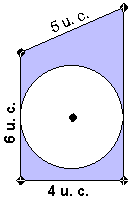 |
Resolução:
Inicialmente, identifiquemos os vértices do trapézio:
|
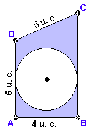 |
Observe que a área pintada é a área do trapézio ABCD menos a área do círculo:
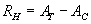 I |
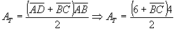
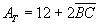
IIVamos encontrar o valor de BC:
Tracemos um reta perpendicular ao lado AD passando pelo vértice D, esta perpendicular intercepta o lado BC em E:
|
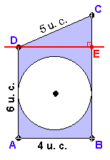 |
Observe que: BE // AD daí 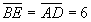 e 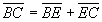 logo: 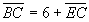 III |
Pelo teorema de Pitágoras:
|
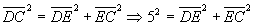 IV |
Como DE // AB, então
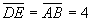
Substituindo na equação IV :
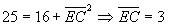
Substituindo na equação III:
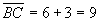
Substituindo na equação II:
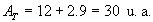
Agora achemos o valor da área do círculo:
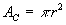
Considere um raio do círculo cujas extremidades são o centro do círculo e um ponto de tangência entre o círculo e o trapézio (observe que neste caso existem apenas dois pontos nesta condição):
|
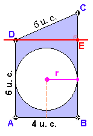 |
Pela figura ao lado, notamos que: r // AB e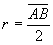 daí: 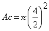 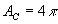 |
Substituindo os valores de Ac e AT na equação I, obtemos:
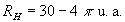
Determinando, então, a área da região pintada.
 Voltar à lista de questões
Voltar à lista de questões
Nota: